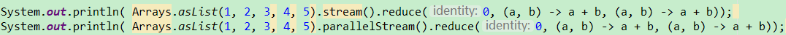
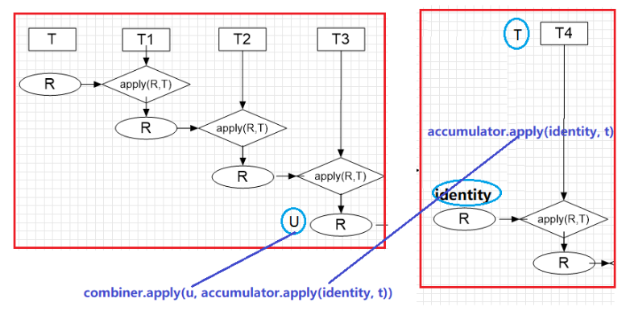

# [五] java 函数式编程归约 reduce 概念原理 stream reduce 方法详解 reduce 三个参数的 reduce 方法如何使用
原文地址:[ 五] java 函数式编程归约 reduce 概念原理 stream reduce 方法详解 reduce 三个参数的 reduce 方法如何使用
# reduce - 归约
看下词典翻译:
好的命名是自解释的
reduce 的方法取得就是其中归纳的含义
java8 流相关的操作中，我们把它理解 "累加器", 之所以加引号是因为他并不仅仅是加法
他的运算可以是一个 Lambda 表达式
所以更准确的说 reduce 是一个迭代运算器
Stream 包的文档中其实已经说的很明白了
但是就是因为不是很理解所以看的云里雾里
其中说到:
一个 reduce 操作（也称为折叠）接受一系列的输入元素，并通过重复应用操作将它们组合成一个简单的结果
参照 reduce 方法文档给出的示例
T result = identity;
for (T element : this stream)
result = accumulator.apply(result, element)
return result;
# 累计运算的概念
以下面的这个方法为例解析
BinaryOperator 是 BiFunction 的三参数特殊化形式，两个入参和返回结果都是类型 T
计算 1,2,3,4,5 的和，并且初始值为 3 也就是计算 3+1+2+3+4+5
**1.** 使用 Stream 两个参数的 reduce 方法进行归约运算
**2.** 使用 for 循环迭代调用 BinaryOperator 的 apply 进行运算
其实两种方式背后的思维方式是一样的
那就是
结果重新作为一个参数，不断地参与到运算之中，直到最后结束
理解 reduce 的含义重点就在于理解 **"累 加 器"** 的概念
只要能够理解了累计运算的概念
就可以完全理解 Stream 中 reduce 方法
他就是一个不断累计运算的过程

Stream 的一个参数和两个参数的方法的基本逻辑都是如此差别仅仅在于一个参数的是 result R = T1 , 然后再继续与剩下的元素参与运算
# 三个参数的 reduce
U reduce(U identity,
BiFunction accumulator,
BinaryOperator combiner);
它的形式类似于

与两个参数的 reduce 不同的地方在于类型双参数的返回类型为 T Stream 类型为 T 三参数的返回类型为 U Stream 类型为 T 有了更大的发挥空间 T 可能为 U 也可能不是 U
很显然，三参数的 reduce 方法的思维方式同双参数的并无二致
所以问题来了，那还要第三个参数做什么？
其实第三个参数用于在并行计算下 合并各个线程的计算结果
并行流运行时：内部使用了 fork-join 框架
多线程时，多个线程同时参与运算
多个线程执行任务，必然会产生多个结果
那么如何将他们进行正确的合并
这就是第三个参数的作用
大致处理流程
从流程上看的 结果 R 是一直参与运算的！！
我们之前也有一个例子
两种情况下的结果是不一样的！！！！
结果不同 是因为 ((((5+1)+2)+3)+4)+5 和 (5+1)+ (5+2)+ (5+3)+ (5+4)+ (5+5) 运算结果不相同
那么这个方法不是有问题么？
其实不然，有问题的是我们的写法
文档中进行了明确的说明要求

翻译下:
**第一点:**identity 的值对于合并运算 combiner 来说必须是一个恒等式，也就是说对于任意的 u, combiner (identity,u) 和 u 是相同的
这句话看起来怪怪的，对于任意的 u 经过合并运算 竟然还是 u, 那还要这个干嘛？？
从我们上面的并行处理流程可以看得出来，这个 result 的初始 identity 对于每一个分支都是参与运算的！
这也是为什么要求:
任意的 u, combiner (identity,u) 和 u 是相同的
的原因
我们之所以会错，就是因为没有达到要求
我们的 combiner 为 (a,b)->a+b;
那么如果分为两个分支进行运算，我们的初始值 identity 就参与了两次运算 也就是说多加了两个 identity 的值！！
怎么样才能保证 u = combiner (identity,u)
除非 identity=0 这才是对于 (a,b)->a+b 来说能够保障 u = combiner (identity,u)
否则，你就不要用 (a,b)->a+b 这个 combiner
我们把 Identity 换成 0 之后

结果就不再有问题了
第二点
combiner 必须和 accumulator 要兼容
对于任意的 u 和 t

这到底是什么意思呢？
场景假设说 4 个元素 1,2,3,4 需要运算此时假设已经 1,2,3 三组数据已经运算结束，马上要同第四组运算 如果是并行，我们假定 1,2,3 在一个分支 4 单独在另一分支
并行时 U 为已经计算好的 1,2,3 后的结果 接下来要与另一组的 4 合并 T4 则是 identity 与 T 参与运算上面的图就是 combiner.apply (u, accumulator.apply (identity, t))

非并行运算 u 直接与下一个元素进行结合运算 
显然这只是并行和非并行两种不同的处理运算方式，他们应该是相同的
也就是